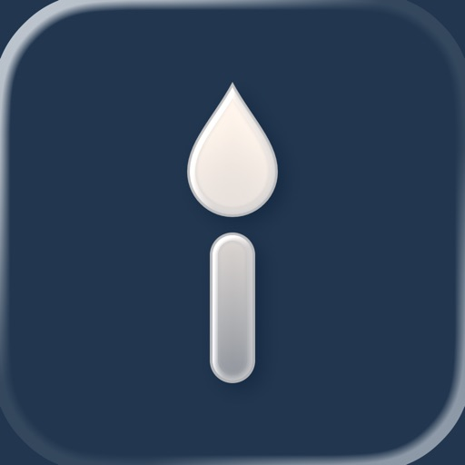
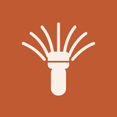

專屬 iPhone、iPad 與 Mac 的純淨私人日記。一日一篇，寫下文字、照片、影片、錄音、心情與標籤，全部只存在你自己的 iCloud——沒有伺服器、沒有廣告，寫日記永遠免費。A calm, private journal for iPhone, iPad, and Mac. One entry a day with photos, video, audio, moods, and tags — kept in your own iCloud. No servers, no ads, and writing is always free.iPhone・iPad・Mac のためのプライベートな日記。1日1ページに、文章・写真・動画・録音・気分・タグを記録。すべてあなた自身の iCloud にのみ保存され、サーバーも広告もなく、書くことはずっと無料です。
Inkday 把每一天，收進一本只屬於你的日記。Inkday keeps every day in a journal that belongs only to you.Inkday は毎日を、あなただけの日記に収めます。
沒有伺服器，看不到你的內容。所有文字、照片、影片、錄音、心情、標籤、地點與行事曆，都只存在你自己的 iCloud，透過你的 Apple ID 在 iPhone、iPad 與 Mac 間安靜同步。沒有帳號、沒有廣告。No servers, and no way for us to see your content. Text, photos, video, audio, moods, tags, places and calendar live only in your own iCloud and sync quietly across iPhone, iPad and Mac through your Apple ID. No account, no ads.サーバーはなく、内容を見ることもできません。文章・写真・動画・録音・気分・タグ・場所・予定は、ご自身の iCloud にだけ保存され、Apple ID で iPhone・iPad・Mac を静かに同期。アカウントも広告もありません。
一天一篇，純淨書寫。加上照片、短片與語音留住當下，用心情與標籤整理生活，自動記下地點與天氣，也能把當天的行事曆與運動存成快照。One entry a day, written cleanly. Add photos, clips and voice notes, organize with moods and tags, record place and weather automatically, and save that day's calendar and workouts as a snapshot.1日1ページ、すっきりと書く。写真・動画・音声でその瞬間を残し、気分とタグで整理。場所と天気は自動で記録し、その日の予定や運動もスナップショットに。
用照片縮圖的媒體日曆瀏覽整個月，「那年今天」帶你回看過去同一天的自己，再用統計與足跡地圖看見自己的書寫軌跡。Browse a whole month in a photo-thumbnail calendar, revisit the same day in past years with On This Day, and see your journaling patterns in stats and a footprint map.写真サムネイルのカレンダーで1か月を見渡し、「今日という日」で過去の同じ日を振り返り、統計と足あとマップで日記の軌跡を確認。
標示「Pro」的是進階功能，其餘全部免費；核心書寫與 iCloud 同步永遠免費。Features marked Pro are the advanced ones; everything else is free — core writing and iCloud sync are free forever.「Pro」の表示は上級機能です。それ以外は無料で、基本の記録と iCloud 同期はずっと無料です。
純粹的一日一篇，用月曆回顧與補寫任何一天。A clean one-entry-a-day rhythm, with a calendar to revisit or backfill any day.シンプルな1日1ページ。カレンダーからどの日でも振り返り・追記できます。
沒有伺服器、沒有帳號、沒有廣告與追蹤。你的日記只有你看得到。No servers, no account, no ads or tracking. Your journal is for your eyes only.サーバーもアカウントも広告もトラッキングもなし。日記を見られるのはあなただけです。
iPhone、iPad、Mac 透過你自己的 iCloud 自動同步，這項核心永遠免費。iPhone, iPad, and Mac sync automatically through your own iCloud — this core is free forever.iPhone・iPad・Mac がご自身の iCloud で自動同期。このコア機能はずっと無料です。
每篇日記都能附上多張照片、影片與語音備忘，留住當下。Add multiple photos, videos, and voice memos to any entry.各ページに写真・動画・ボイスメモを複数追加できます。
用心情 emoji 與標籤整理，全文搜尋隨時找回任何一天。Organize with mood emojis and tags, and find any day with full-text search.気分の絵文字とタグで整理し、全文検索でどの日もすぐに見つけられます。
新增日記時記下所在地點，並補上當天天氣（由 Apple Weather 提供）。回到家才補記？也能搜尋地標或選附近的地點，指定這一天的所在位置。Tag where you were and capture that day's weather (powered by Apple Weather). Writing it up once you're home? Search for a landmark or pick a nearby place to set where the day happened.日記を書いた場所を記録し、その日の天気も残せます（Apple Weather 提供）。帰宅してから書く場合も、ランドマークを検索したり近くの場所を選んで、その日の場所を指定できます。
把當天的行事曆行程存成文字快照。就算日後換行事曆或換手機，也能從日記回看當天的安排。Save that day's calendar events as a text snapshot — look back on your plans even after switching calendars or phones.その日の予定をテキストのスナップショットとして保存。カレンダーや端末を変えても振り返れます。
在 iPhone 與 iPad 上，新增日記時自動把當天的活動能量從「健康」存進日記（免費）；Pro 另可記下步數、運動分鐘與完整運動紀錄。這份紀錄只留在抓取的那台裝置，不會跟著日記同步。On iPhone and iPad, new entries can save the day's active energy from Health (free); Pro adds steps, exercise minutes, and full workouts. This stays only on the device where it was captured, not synced with your entry.iPhone と iPad では日記の作成時にその日のアクティビティエネルギーを「ヘルスケア」から保存（無料）。Pro では歩数・運動時間・ワークアウトの詳細も記録できます。取得した端末だけに保存され、日記と一緒に同期されません。
七套紙質配色，並支援跟隨系統的淺色／深色外觀。Seven paper-toned themes, with light and dark that can follow the system.7種類の紙のような配色。システムに合わせたライト／ダークにも対応。
連續書寫天數、心情與標籤排行，看見自己的日記軌跡。Writing streaks, mood and tag rankings — see your journaling patterns.連続記録日数、気分やタグのランキングで、日記の傾向が見えます。
把有地點的日記標在地圖上，重走走過的地方。See your located entries on a map and retrace where you've been.場所付きの日記を地図に表示し、訪れた場所をたどれます。
PIN 加生物辨識（Face ID／Touch ID）鎖住整個 App，忘記 PIN 可用裝置密碼救援。Lock the whole app with a PIN plus Face ID / Touch ID; recover with your device passcode.PIN と生体認証（Face ID／Touch ID）でアプリ全体をロック。PIN を忘れても端末のパスコードで復旧できます。
點開照片或影片全螢幕檢視、左右滑動；可指定「當日封面」，並用照片縮圖在「日曆」瀏覽整個月，一路往回捲到任何日期補寫。Open photos and videos full screen and swipe through the day, pick a cover for each day, and browse a whole month by photo thumbnails — scroll back to any date to backfill.写真や動画を全画面で開いてスワイプ。日ごとのカバーを選び、写真のサムネイルで1か月をカレンダー表示。どの日付にもさかのぼって書き足せます。
把單張或整天的照片與影片存回「照片」或檔案（iOS 只加不讀；Mac 存到你選的資料夾）。Save a single photo or video, or a whole day's media, back to Photos or Files (iOS adds only and never reads; Mac saves to a folder you choose).1枚または1日分の写真・動画を「写真」やファイルに保存（iOS は追加のみで読み取りなし、Mac は選んだフォルダへ）。
記下交往日、生日或想倒數的日子，算出已經過了幾年幾個月幾天；第 100、500、1000 天與每個週年當天提醒你，日記與日曆也會標出這一天。免費可記 3 個，Pro 不限數量。Track the day you got together, a birthday, or a day to count down to — Inkday works out the years, months, and days, reminds you on day 100, 500, 1000 and every anniversary, and marks that day in your diary and calendar. Free for 3; Pro removes the limit.付き合った日や誕生日、カウントダウンしたい日を記録し、経過した年・か月・日を自動計算。100日目・500日目・1000日目や毎年の記念日にお知らせし、日記やカレンダーにもマークが付きます。無料で3件まで、Pro なら無制限。
在 iPhone 與 iPad 的鎖定畫面或桌面加入紀念日小工具，一眼看到過了多久、還有幾天。Add an anniversary widget to your Lock Screen or Home Screen on iPhone and iPad to see how long it's been, or how many days are left, at a glance.iPhone と iPad のロック画面やホーム画面に記念日ウィジェットを追加して、経過日数や残り日数をひと目で確認できます。
把紀念日放上錶面，每個複雜功能可各自挑選要顯示哪一個，抬手就看到過了多久、還有幾天。Put an anniversary on your watch face; each complication can show a different one, so a glance at your wrist tells you how long it's been or how many days are left.記念日を文字盤に表示。コンプリケーションごとに表示する記念日を選べ、手首をひと目見るだけで経過日数や残り日数が分かります。
翻出同月同日的過往日記，重溫每一段回憶。Revisit entries from this day in past years.過去の同じ日の日記を呼び出して振り返れます。
把日記連同照片匯出帶著走，或從其他 App 匯入。你的資料始終屬於你。Export your journal with photos, or import from other apps — your data is always yours.写真ごと日記を書き出したり、他アプリから読み込んだり。データは常にあなたのものです。
核心書寫永遠免費；想要更多，可選擇訂閱，或一次買斷「永久」。Core writing is free forever; want more? Subscribe, or buy it once for good.基本の記録はずっと無料。もっと使いたいときは、サブスクか、一度きりの買い切りで。
購買透過 Apple 處理；訂閱可隨時在 Apple ID 的訂閱設定取消，並可「恢復購買」。開發者不會收到你的付款資訊。Purchases are handled by Apple; subscriptions can be cancelled any time in your Apple ID settings and purchases can be restored. The developer never receives your payment details.購入は Apple が処理します。サブスクは Apple ID の設定からいつでも解約でき、「購入の復元」も可能です。支払い情報が開発者に届くことはありません。
用同樣的心意做的另外兩款 App。Two more apps made with the same care.同じ思いで作った、もう2つのアプリです。

記錄每一罐抹茶的用量、心得與賞味期限，分階段陪你刷好一碗茶，並在快到期前提醒你。Track every tin's usage, notes and best-by date, whisk with a guided timer, and get reminded before it's past its prime.一缶ごとの使用量・感想・賞味の目安を記録。段階タイマーで点てるのをお手伝いし、期限前にお知らせします。
掃條碼快速記錄，掌握家裡食物、日用品與美妝的到期日與存量，不再放到過期。Scan barcodes to track expiry dates and stock of food, daily goods and cosmetics — and stop wasting them.バーコードですばやく記録。食品・日用品・コスメの期限と在庫を把握して、期限切れをなくします。
使用上的問題、建議或錯誤回報，歡迎來信，我們會盡快回覆。Questions, suggestions or bug reports are welcome — we'll reply as soon as we can.ご質問・ご提案・不具合の報告はメールでお気軽にどうぞ。できるだけ早く返信します。